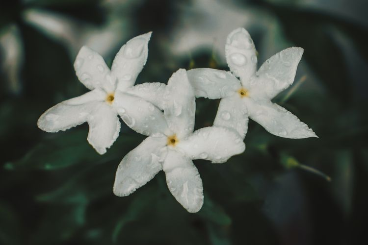

Daisy
Bunga Daisy melambangkan kepolosan, kesetiaan, dan kebahagiaan.
Melati
Bunga Melati dikenal sebagai bunga nasional Indonesia, simbol kesucian dan keharuman.
Anyelir
Bunga Anyelir sering digunakan sebagai simbol cinta dan kekaguman.
Gerbera
Populer karena warna-warninya yang cerah dan makna kebahagiaan.
Peony
Peony dikaitkan dengan kehormatan dan kemakmuran.
Aster

Bunga Aster mewakili cinta dan kesabaran, hadir dalam warna ungu dan pink.
Hortensia
Dikenal dengan kelopak besar dan warna-warna pastel yang memukau.
Krisan
Simbol panjang umur dan kebahagiaan.
Video YouTube Tentang Taman Bunga
Menampilkan keindahan Taman Bunga Nusantara yang tidak kalah dengan taman-taman indah di luar negeri.
Menikmati taman bunga yang luar biasa cantik dan dapat menjadi inspirasi.